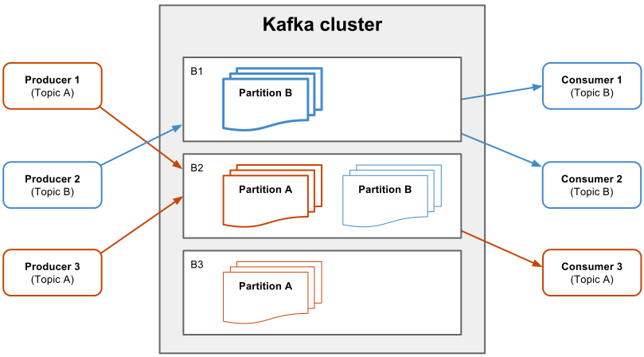
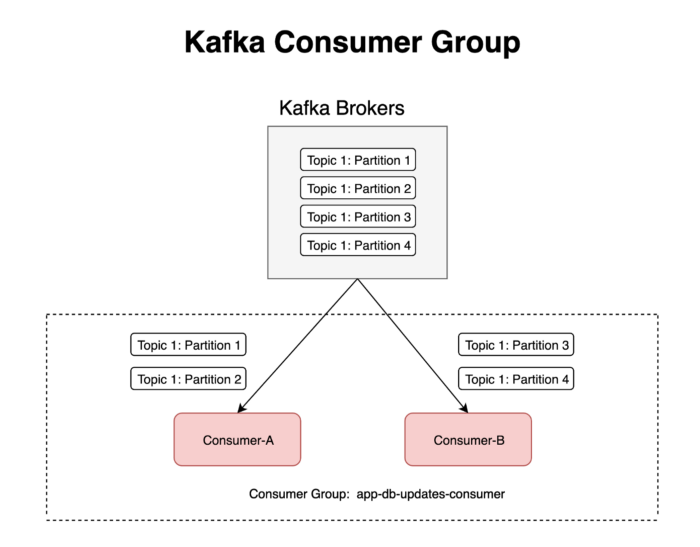

Informacje ogólne
Apache Kafka to tak zwany message broker. Tego rodzaju aplikacje odpowiadają za odbieranie, walidację, ewentualne przekształcenia i rozsyłanie komunikatów pomiędzy aplikacjami. Umożliwiają bardzo elastyczny sposób komunikowania się luźno ze sobą powiązanych elementów systemów informatycznych.
Cechą charakterystyczną Kafki jest jej niezawodność, wydajność i zdolność do pracy w środowisku rozproszonym. Kiedy zespół LinkedIn tworzył Kafkę, ich główną motywacją było poradzenie sobie z przetwarzaniem w czasie rzeczywistym ogromnej ilości zdarzeń. W 2014 roku w LinkedIn komunikacja za pośrednictwem Kafki przebiegała zarówno pomiędzy klastrami, jak i centrami danych. W sumie przesyłano około 200 miliardów komunikatów dzienne, osiągając 7 milionów komunikatów na sekundę!
Kafka umożliwia przesyłanie komunikatów (ang. message) pomiędzy aplikacjami w systemach rozproszonych. Nadawca może przesyłać komunikaty do Kafki, natomiast odbiorca pobiera wiadomości ze strumienia publikowanego przez Kafkę.
Komunikaty pogrupowane są w tzw. tematy (ang. topic). Zarówno nadawca, jak i odbiorca powiązany jest z jednym tematem. Nadawca przesyła komunikaty z określonego tematu, a odbiorca otrzymuje za pośrednictwem Kafki wszystkie komunikaty z określonego tematu, które mogą pochodzić nawet od wielu nadawców. Każdy wysłany przez dowolnego nadawcę komunikat z danego tematu trafi do każdego odbiorcy, który nasłuchuje tego tematu.

Kafka jest uruchamiana na wielu serwerach, podobnie jak rejestry komunikatów z danego tematu są przechowywane i replikowane na wielu maszynach jednocześnie. Pojedynczy serwer – instancja Kafki to tzw. broker (ang. broker)
Komunikaty z danego tematu dopisywane są do tzw. partycji (ang. partition). Partycja to pewien rejestr, uporządkowana sekwencja komunikatów, która nie zmienia się, oprócz tego, że nowe komunikaty mogą zostać dopisane na koniec tej sekwencji, a stare – na przykład starsze niż dwa dni – są zapominane. Aby pobrać odpowiednią sekwencję komunikatów, odbiorcy muszą jedynie znać swoją pozycję w rejestrze – indeks ostatnio odczytanego komunikatu.
partycje Kafki są replikowane, to znaczy, że ich kopie mogą znajdować się na wielu serwerach. Dla każdej partycji istnieje jeden serwer, który jest tzw. liderem (ang. leader) i który obsługuje wszystkie operacje odczytu i zapisu danej partycji. Dla każdej partycji mogą istnieć także serwery (ang. followers), który jedynie kopiują dane od lidera. Jeśli na przykład ustawisz współczynnik replikacji na 3, to znaczy, że każda partycja będzie miała jednego lidera i 2 serwery (dwóch brokerów), którzy jedynie kopiują dane, zwiększając tym samym bezpieczeństwo klastra na awarie.
Wazne punkty:
- Każda partycja związana jest tylko z jednym tematem.
- Rejestr komunikatów z danego tematu może być rozbity na wiele partycji.
- Każda partycja musi zmieścić się na pojedynczej instancji Kafki (pojedynczym brokerze).
- Partycja może być replikowana.
- Większa liczba partycji pozwala na zwiększenie wydajności operacji odczytu i zapisu komunikatów.
- Większy współczynnik replikacji pozwala na zwiększenie bezpieczeństwa danych (na zwiększenie odporności klastra na awarie).
Poniżej pokazuję jeszcze na rysunku przykład działania klastra Kafki składającego się z trzech brokerów: B1, B2, B3. W tym przykładzie dla każdego tematu tworzona jest jedna partycja – stąd też w sumie są dwie partycje A i B, odpowiadające tematom A i B. Współczynnik replikacji został ustawiony na poziomie 2, to znaczy, że każda partycja pojawia się na dwóch serwerach.
Broker B2 jest liderem dla tematu A, to znaczy, że w rzeczywistości to on jest odpowiedzialny za wszystkie operacje zapisu i odczytu do partycji A. Partycje na instancjach kafki B1 i B3 są jedynie kopiami. Analogicznie broker B1 jest liderem dla tematu B, a partycje A na B2 i B3, zawierają kopie danych z partycji na B1
W środowisku rozproszonym bardzo ważna jest odporność na awarie. System rozproszony, działający na wielu urządzeniach jednocześnie, powinien pracować bez zakłóceń nawet wtedy, gdy kilka serwerów przestanie działać. Dodatkowo można mówić o gwarancjach dotyczących sposobu dostarczania komunikatów. Rozróżnia się trzy rodzaje takich gwarancji:
- Co najwyżej raz – komunikaty mogą zostać utracone, ale na pewno nie dojdzie do sytuacji, kiedy komuniat zostanie dostarczony wielokrotnie.
- Przynajmniej raz – komunikat może zostać odebrany ponownie, ale za to żaden nie zostanie utracony.
- Dokładnie jeden raz – każdy komunikat jest dostarczony jeden raz do odbiorcy.
Kafka domyślnie gwarantuje dostarczenie komunikatu przynajmniej raz, ale możliwe jest takie jej skonfigurowanie, by, przy odpowiedniej implementacji nadawców i odbiorców,umożliwić gwarancję dostarczenia co najwyżej raz, albo dokładnie jeden raz. Niesie to ze sobą jednak określone koszty, związane z wydajnością.
GrupId - służy do grupowania konsumerów, zapewnia sytuację w której wiadomość jest dostarczana tylko do jednego consumera w danej grupie. Ilustracja poniżej:
As shown in the diagram, Kafka would assign:
- partition-1 and partition-2 to consumer-A
- partition-3 and partition-4 to consumer-B
This means, the same data wouldn’t consumed by the consumers within the same group.
Instalacja
Aby korzystać z kafki należy ją pobrać ze strony(wersja 2.13-2.4.0) apache kafka rozpakowac i uruchomić terminal w folderze gdzie zainstalwoana jest kafka
najpierw należy uruchomić Zookeper:
C:\kafka_2.12-0.10.2.1>
.\bin\windows\zookeeper-server-start.bat .\config\zookeeper.properties
Nastepnie kafka:
C:\kafka_2.12-0.10.2.1>
.\bin\windows\kafka-server-start.bat .\config\server.properties
Od tej pory kafka nasłuchuje. Komunikaty można przesłać przez terminal w jednym oknie i odbierac w drugim lub z wykorzystaniem Javy
Kafka w Javie
-Dodać zalezność spring-kafka do projektu. - można użyć Spring initializer.
-Utworzyć Producera wykorzytsując do tego Kafka Template
Utworzyć Consumera - należy uzyć adnotacji @KafkaListener nad metodą
Do przesyłania własnych obiektów należy dodatkowo dodać konfigurację do serializacji obiektów